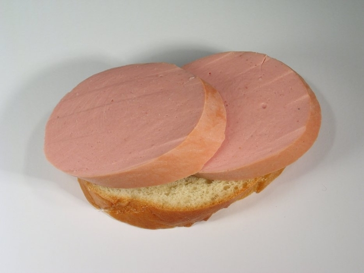

Home
Buterbrod with doctors sausage

Description
Eternal classic of single men and gaming night. Pairs well with sweet black tea with lemon
Ingredients
- White bread "Baton" - 1 slice
- Sausage "Doktorskaya" - 2 slices
Instructions
- Cut a slice of bread.
- Cut two formidable slices of the sausage
- Put the sausage on the bread overlapping the splices of the sausage. Serve with sweat tea